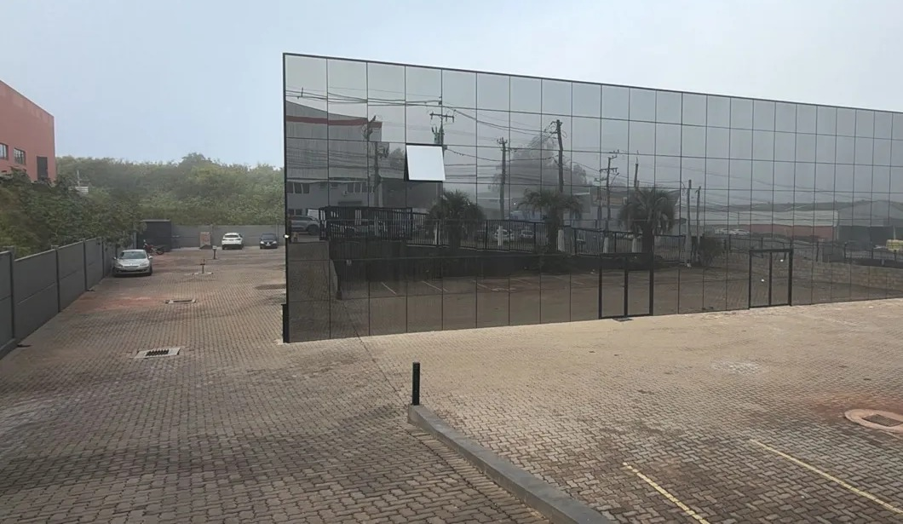

Uma indústria de compósitos nascida da experiência no setor elétrico
A Qleve Fiber transforma fibra de vidro e resina em estruturas leves, isolantes e resistentes à corrosão. Começamos pelos postes em PRFV, com atendimento em todo o Brasil e no exterior.
Experiência de mercado com processo industrial
A Qleve Fiber Indústria de Transformação Ltda. foi constituída em 2020 em Cachoeirinha, no Rio Grande do Sul. Em 2026 iniciou a fabricação de postes em PRFV por enrolamento filamentar, primeiro passo de uma indústria de soluções estruturais em compósito.
Por trás da operação estão executivos com mais de 30 anos no setor de energia, à frente de uma fornecedora de equipamentos de medição e telemetria para concessionárias, e executivos com 30 anos na indústria de máquinas. Essa combinação orienta a empresa: entender a necessidade de quem opera a rede e responder com engenharia e controle de produção.
Fornecemos para distribuidoras, cooperativas, empreiteiras, concessões de iluminação, integradores e indústrias, no mercado nacional e em exportação.
2020
Constituição da empresa em Cachoeirinha/RS.
2026
Primeira linha: postes em PRFV.
NBR 16989:2021
Referência para projeto e ensaios dos postes.
Brasil e exterior
Atendimento nacional e internacional.
Ser referência em soluções estruturais de compósito para energia, cidades, indústria e infraestrutura.
A Qleve se posiciona como indústria de compósitos. O conhecimento de processo construído com os postes é a base para as próximas linhas.
Postes em PRFV
Linhas PFC (topo circular), PFQ (topo quadrado) e PU (urbana), em seção única.
Leve no peso. Forte na estrutura.Vergalhões em PRFV
Armadura não metálica para concreto em ambientes sujeitos à corrosão.
Concreto armado sem corrosão.Perfis e estruturas
Perfis em compósito para infraestrutura e aplicações industriais.
Distrito Industrial de Cachoeirinha/RS
A unidade fica na Região Metropolitana de Porto Alegre, com acesso às principais rodovias do Sul e aos portos do estado, o que facilita a logística para outras regiões do país e para exportação.
- Capacidade de 480 postes/mês em um turno e 960 postes/mês em dois turnos
- Enrolamento filamentar com programa CNC
- Controle de qualidade e rastreabilidade por lote
- Postes por carreta: a preencher

Equipamentos e linha de produção


Da aplicação ao lote entregue
Cada pedido parte da aplicação: tipo de rede ou equipamento, carga, comprimento, ambiente e local de entrega. A partir disso a engenharia indica o modelo e a Qualidade acompanha o lote do início ao fim.